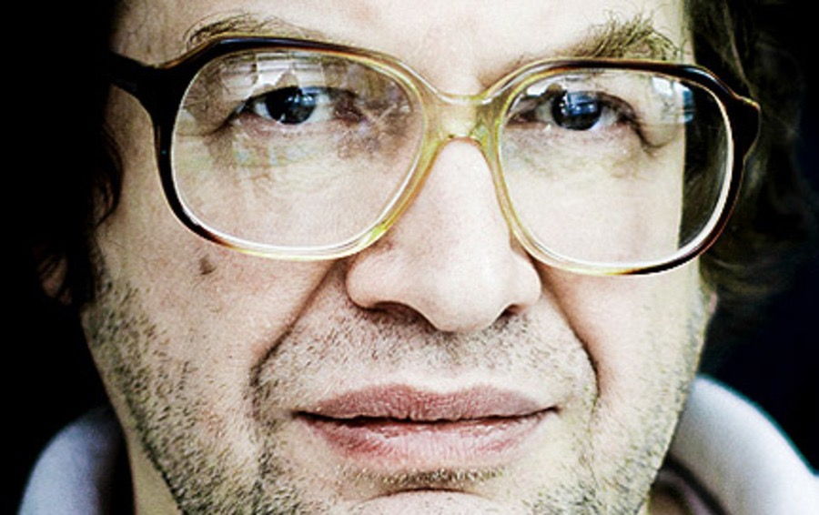

Регистрация в телеграм-боте
Вернуться в раздел "Публицистика Сергея Мавроди"

Итак. Что такое финансовая пирамида? Почему пирамиды преданы анафеме везде, во всех без исключения государствах? Даже в самых что ни на есть лояльных, свободных и демократичных? Почему с ними так безжалостно, упорно и последовательно борются? Азартные игры, наркотики в некоторых странах разрешены! но пирамиды запрещены − везде! Повсеместно. Почему так? Есть в этом нечто прямо-таки загадочное и мистическое. Никогда не задумывались?
Ну так, почему? Потому что «пострадают люди»? Ерунда!! Кого интересуют «люди»? Это быдло, эта жрущая и размножающаяся протоплазма, это многомиллиардное человеческое стадо! Эти бессловесные, забитые и покорные рабы! «Пострадают» они там или нет. Да кого это вообще волнует?!
Не говоря уж о том, что с какой стати они пострадать-то должны? Всего лишь очередной миф, один из очень и очень многих, из серии «честного зарабатывания денег». Что люди-де в пирамиде обязательно должны − «пострадать». А сама пирамида − рухнуть! (И когда же? Когда весь мир охватит? Ну, значит, пока у вас есть хоть один неохваченный знакомый − спите спокойно. Да и это неверно. Всё равно не рухнет! Даже ещё устойчивей станет.

Так почему же тогда всё-таки? Откуда такая ненависть и столь яростное неприятие? А? Сказать? Открыть уж вам эту самую главную и страшную буржуинскую тайну? Только − тс-с-с!.. Никому ни слова! Договорились? Ладно, ну, тогда слушайте. :-))
ПОТОМУ ЧТО ПИРАМИДЫ ПРОИЗВОДЯТ… ДЕНЬГИ!!! Да-да-да, именно так! ДЕНЬГИ!! Из ничего, из воздуха! Так же точно, как из ничего, из воздуха производят их и сами Хозяева. И тоже при помощи пирамид! Доллар является пирамидой вовсе не случайно! Других механизмов для производства денег попросту не существует. Вообще! Только финансовые пирамиды. Не верите? Тогда назовите мне хоть одну мировую валюту, пирамидой не являющуюся. Хоть одну-единственную! Евро?.. фунт?.. юань?.. А?.. Швейцарский франк, может быть?.. Что?! Те же российские власти охотно ругают последнее время доллар, но скромно умалчивают при этом, что и рубль − такая же в точности пирамида. Ничем не лучше. (Да хуже даже! На порядок. Базирующаяся на долларе. Пирамида на пирамиде. :-))
Да, пирамиды производят деньги. А это позволено только − Хозяевам. Это их святая и неотъемлемая прерогатива и их непреложная монополия. Право на производство денег и делает их − Хозяевами. А тут их производят − рабы!!!
В результате всё рушится. Рвётся мгновенно вся та липкая паутина лжи и лицемерия, которая заботливо, тщательно и неустанно опутывает человека ежеминутно, ежесекундно, с самого момента его рождения и до самой смерти. Пелена спадает. Морок рассеивается. Человек обнаруживает вдруг, что финансовая клетка − распахнута! Он − свободен! Сначала он просто изумляется и не верит сам себе: как это он получает деньги просто так, задаром, ни за что? И ему не надо больше сидеть в этой клетке? Этого же не может быть в принципе, это невозможно! Ему всю жизнь внушали, что это невозможно!! Что надо трудиться!.. честно работать в поте лица!.. (на кого? на тех, кто это внушает? а сами-то они много работают? все эти хозяева жизни? :-))зарабатывать!.. Это правильно, это справедливо! И только тогда ты что-то получишь. Что-то тебе дадут. (Кинут! От щедрот. :-)) А теперь вдруг выясняется, что − не надо?! Что это совсем даже и не обязательно?! Как же так??!!.. Затем он начинает думать. Так, значит, деньги вовсе не мерило труда? Раз их могут просто раздавать, разбрасывать, дарить по своему желанию? И мир от этого не рушится! А что же они тогда? Если не мерило труда?.. Да неужели же это… просто бумажки?! Просто − фантики??!! Затем он осматривается вокруг и видит рядом людей, всё так же тупо и монотонно, не поднимая головы, работающих в соседних клетках… за эти бумажки… за эти никчёмные фантики… Людей, ещё вчера бывших его друзьями, близкими… А сегодня их разделяет пропасть. Они по-прежнему рабы, а он − нет! Он вкусил запретного плода − свободы! Он узнал, что это такое − чувствовать себя свободным. Чувствовать себя − Человеком! И этого он уже никогда не забудет.
Иными словами, пирамиды делают людей − Людьми. Они делают их − СВОБОДНЫМИ! Они производят СВОБОДУ! Генерируют, несут её! Людям. Обычным, рядовым, простым людям. (А уж как люди распорядятся этой свободой, это другой вопрос.) Это и есть первопричина. Всего! Именно поэтому-то финансовые пирамиды так боятся и ненавидят. Хозяева. В этом-то и вся суть.
Вы верно думаете, что если пирамиду остановить, то проигравших будет больше чем выигравших. Это единственное, что верно из уже приевшихся размышлений очень разбирающихся в пирамидах людях. Но вы, вестимо, размышляя о пирамиде, забываете о мире вокруг. Если любую привычную Вам финансовую структуру остановить, пострадавших будет больше, чем что-то получивших. Статистически, если остановить банк, пострадавших будет более, чем в 3 раза больше, чем получивших… Если остановить «среднее» государство, как функционирующую финансовую систему, лишь 1/10 всех человек сможет получить свои деньги. Для России это примерно 1/25. Вот так можно экстраполировать Ваши рассуждения на всю финансовую систему. И в государстве есть эти ваши «первые», и в банках, и в акционерных обществах, и вообще везде.
А теперь вопрос на миллион. Почему приток вкладчиков должен прекратиться, если система стабильно выплачивает от 20% в месяц? Может быть, потому что все люди закончатся? Или потому что все деньги закончатся? И в том и в другом случае внешняя относительно пирамиды валюта потеряет всякий смысл и исчезнет, если чуть-чуть знать законы экономики… И отказываться от МАВРО в пользу никакой валюты — смысла, в общем-то, не будет. Если знать чуть побольше, то не сложно понять, что процесс этот протяженный во времени, и когда в пирамиде будет уже огромное количество людей (50 миллионов? Сто? Миллиард?) это начнёт сказываться на внешней относительно пирамиды экономической системе в пользу обесценивания её оборотных средств… Механизм сего я тут уже не раз описывал.
Замечательно. Пирамиды ничего не производит, так же как порядка 95% (процент из головы :-)) всех рабочих мест в стране. Все финансовые структуры, все бумажные работы, все игры на биржах с акциями, все менеджеры, все посредники.
А как же живут те, кто производят? А очень просто они живут — получают дай бог 5% от реальной стоимости того, что они произвели. Остальные деньги идут по инстанциям вверх, причём чем выше инстанция, тем больше получают по сравнению с работягой.
Таковы реалии. На тех, кто производит товары, паразитирует такая масса населения, что с точки зрения, например, инженерных рассчётов, производителями вообще можно пренебречь (чего мы не делаем, просто как пример :-)). Посему я считаю, что весьма глупо, сидя в чане с дерьмом, возмущаться что рядом с вами у человека одежда запачкалась… Но это вопросы морали…
Теперь по пунктам. О том, что пирамида «собирает просто деньги у одних, раздавая другим» сообщается на блоге. Многократно. Огромными буквами. Какие логические цепочки надо выстроить у себя в голове, чтобы после этого говорить, мол, это обман — мне не понятно… Все, ВСЕ до одного это понимают.
Пункт два. Пирамида паразитирует на финансовых структурах. Разъедая и разрушая их. Да. Но не на обществе… Общество вольно принимать решения.
А если вы внимательно изучите принципы пирамиды, то поймёте, что НАИБОЛЕЕ эффективными будут такие вклады в неё, которые сопровождаются бизнесом и прибылями. Так что стимул производства для участников — существенный, и весьма некорректно говорить, что внутри неё ничего не производится. Производится, уже сейчас. И любому производителю, свободному от стереотипов, должно быть ясно, что производство гораздо более прибыльно на площадке, объявившей о постоянном повышении курса. В этом и её прелесть — она втягивает в себя всё вокруг, чтобы оставить за своими пределами лишь порочную, как вы сами это прекрасно понимаете, финансовую систему. С банками, ростовщиками, долговой кабалой и т.д. и т.п…
Я не критикую банковскую пирамиду в плане схемы, по которой она работает… я критикую её в плане того, что банкиры забирают всё себе, имея чуть ли не такой же потенциал…
Тут же всё настолько прозрачно, насколько это возможно…
А по поводу рухнет мультипликатор — фигушки вам… если обеспечить любое подобное заведение верой в его стабильность, то хрен оно рухнет :-)) банковскому мультипликатору больше тысячи лет, если что…
Его надо разрушать, сам он не рухнет :-))
Можете и видео про него посмотреть:
В каком чудесном вы мире живёте, где деньги не растут на деревьях :-))
Это человеческое упрямство порой не может не поражать…
Вернуться в раздел "Публицистика Сергея Мавроди"
Регистрация в телеграм-боте